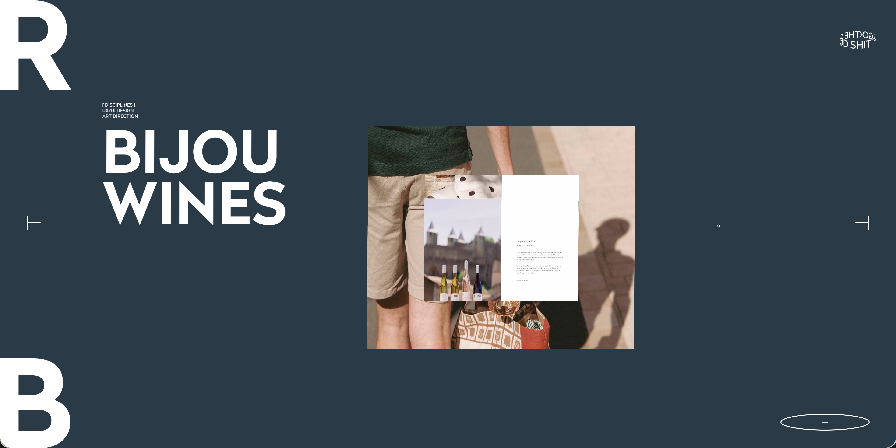
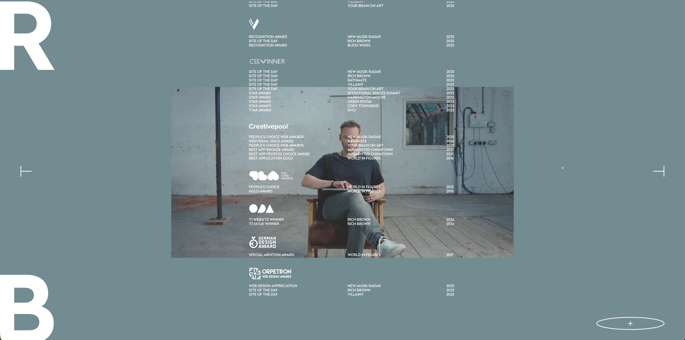

When interacting with Rich Brown’s Site, the first thing that I paid attention to was the cursor. First of all, the design of the cursor being the small white circle, then the animation of it and its delayed follow-path kind of style.
Interactive Experience Research Project
MARK SERNIO
WEBSITE: RICH BROWN


1
2
Started with moving the mouse while loading screen was playing. Once loaded, I then hovered mouse around and over things to see what was clickable. I then proceeded to scroll down (continuously) for a bit. I stopped and then I clicked the big ‘R’ in the top right which took me back to the top so then clicked the big ‘B’ in the bottom left which opened a kind of Profile Card. After, I clicked the big ‘R’ again to return me to the main page and clicked the plus in the bottom right. After that I then hovered over socials from that drop-down, clicked out, continued scrolling down and then clicked Play on the showreel the appeared when the downward scrolling stopped, and watched the showreel.
I spent the most part of the experience engaging with the Portfolio part of the site and interacting buttons and the scrolling functions to through some examples of all his work and the large range of formats in those examples.
3
4
The most common action was scrolling, which I would say would be because of how dependent the site is on scrolling to progress to further stages or further pieces of information.
I think that the intended primary goal of the interactive experience is to exhibit the depth of skill and experience that ‘Rich Brown’ has in the UI/UX field, as the overall point of the site is for it be a portfolio of his work. I believe he achieved this as the functionality and interactivity of the site is not something that is common in generic sites and it certainly is distinguishable in comparison.
5
6
The interactive experience communicates this primary goal through the elevated nature of basic elements. For example, the cursor has turned into a visual and interactive element in itself. The function of a simple scroll is what drives the creative flow and function of the whole page too. Hovering over clickable buttons is a visual interaction too, with the cursor circle expanding to a larger circle with a relevant icon in the middle.
Based on what I interacted with, I would say that this experience is one that should be and would be visited many times on various occasions; whether that be for Job applications or simply to get a sense of his experience and credibility as a designer It’s one that an individual should spend at least 10 minutes to have a solid foundation of Rich Brown and is work as a Designer. 1
7
8
Being a portfolio, I would say the interactive elements of the site communicate that it should be returned to every now and then, rather than consumed all at once. The amount of projects, alongside the archive section at the bottom, and the continuously updating award list all suggest that there is always something new in comparison to the last visit, or something missed. The depth of each individual project also signals that a single visit is unlikely to be enough to fully appreciate everything on offer.
The experience references a few different media forms outside of the web. The biggest one is the cinematic video reel with the auto playing and full-bleed footage. It also pulls from editorial photography, and there's a gallery or exhibition feel to the way content is paced and presented, like each project is being shown off rather than just listed. In addition, the portfolio work itself brings in additional forms such as music videos and campaigns based on the projects for brands like MTV and Ivy Park.
9
10
The references to cinematic video and gallery presentation communicate that I should slow down and let the experience come to me, rather than scanning for information like I would on a typical website. The pacing and flow suggests I should take my time with each project rather than rushing and skimming through. The music video and fashion campaign references also signal that this is something to be watched and experienced rather than read, which made me feel like scrolling slowly and paying attention to the visuals was the right way to engage with it.
When it comes to how I should feel when engaging with my research experience, the references to communicate that I should feel a sense of prestige and also a sense of an elevated experience when engaging with this site in comparison to others. It definitely doesn’t feel like browsing a typical webpage as its much more unique and engaging, and it feels more like a private exhibition between the user and Rich. The deliberate pacing and high quality construction of the visuals and animations create a feeling of class and inspiration which I would say is the goal of the site and its intention when shared to users (most likely job prospects)
11
12
The most frustrating part of the interaction to me was probably the horizontal scrolling. Although its unique, it was confusing me as I’m used to conventional scrolling and I found at times due to the disorientation, I was more focused on that than the content I was actually seeing. I also felt because of how feature-rich it was, that sometimes the content got overlooked and I found myself having to go back and read it after exploring the many functions of the site.
The most satisfying part of the interaction to me was all the animations. The way the site used simple geometric shapes in combination with modern and complex motion to deliver a truly unique experience was impressive and great show of skill. What made is so satisfying was how seamlessly it all flowed with everything working perfectly together while still feeling distinct and unlike anything you'd typically encounter on the web.
13